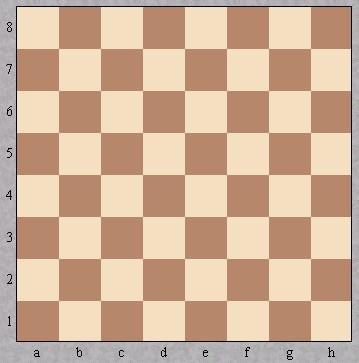
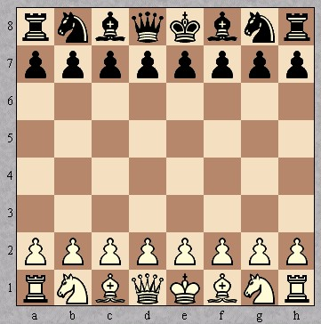

Das Ziel des Spiels ist den gegnerischen König schachmatt zu setzen, d.h. den gegnerischen König so
anzugreifen, dass dieser nicht entkommen kann. Das Angreifen des Königs durch eine gegnerische Figur heißt
Schach. Wenn dem eigenen König Schach geboten wird, muss man diesen Zustand sofort beheben:
- die schachgebende Figur schlagen
- eine eigene Figur zwischen die schachgebende und den eigenen König stellen, so dass es kein Schach mehr ist (ist bei einem Springerschach unmöglich)
- mit dem König wegziehen